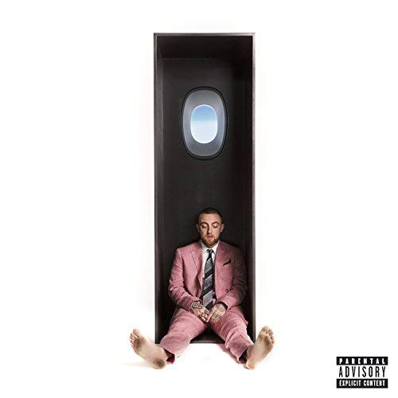

Music
저는 음악 듣는 것을 좋아합니다. 저에게는 좋은 음악을 듣는 기준이 있습니다.
제가 생각하기에 좋은 아티스트란 자신이 할 수 있는 것을 정확히 이해하고 그 색깔을 잘 구현하는 사람입니다.
남들이 할 수 있는 음악은 크게 와닿지 않습니다.
아티스트의 고유한 음악, 오리지날리티를 중요시 여깁니다.
외국 음반들을 즐겨 듣는데 그럴때는 자막 뮤비 등을 즐겨 보긴 하지만 주로 소리에 집중합니다.
밑에서 제가 좋아하는 아티스트들과 음반에 대해 다루어보고자 합니다.
p.s 앨범 사진을 클릭하면 유튜브 링크로 연결됩니다.
Artists
Mac Miller

첫번째 맥밀러입니다. 얼마전 세상을 떠나서 매우 안타까운 아티스트입니다.
그의 힘을 뺀 목소리는 쳐지는 느낌 없이 오히려 음악에 더 집중하게 해줍니다.
앞으로 그의 목소리를 더 들을 수 없다는 것이 정말 슬픕니다.

Swimming (2018)
제가 가장 좋아하는 맥밀러의 음반 중 하나입니다.
이 앨범은 거르고 들을 트랙이 하나도 없습니다. 앨범 전체를 통으로 돌리는 것을 추천합니다.
개인적인 감상평을 쓰자면 매번 들을 때마다 디테일적으로 새로운 사운드가 들립니다.
단순히 목소리를 입히는 것만이 아니라 배경이 되는 인스트루멘탈에 그가 얼마나 신경을 썼는지 알 수 있습니다.
Circles (2020)
맥밀러의 사후 앨범입니다. 이 앨범도 통으로 듣는 것이 좋습니다.
위에 적은 Swimming에 이어지는 내용의 앨범이라고 알고 있습니다. 그래서 저는 Swimming과 Circles를 연달아 듣습니다.
매번 느끼지만 이런 재능있는 아티스트의 음악을 더 들을 수 없다는 것이 정말 아쉽습니다.
Kendrick Lamar
미국 힙합을 즐겨듣는데 최고를 꼽으라면 단연 켄드릭 라마라고 생각합니다.
우선 그는 음악을 굉장히 잘합니다. 앨범의 전체적인 구성 요소가 굉장히 탄탄하고 유기적입니다.
그리고 이 시대 최고의 리릭시스트입니다. 가사를 굉장히 잘씁니다.
단순한 라임 배치를 넘어 말하고 싶은 스토리를 시를 쓰듯 풀어갑니다.

Good Kid Maad City (2012)
켄드릭 라마를 단번에 스타 반열에 오르게 해준 앨범입니다.
이 앨범도 통으로 듣는 것을 추천합니다.
앨범 커버 하단에 'A Short Film by : Kendrick Lamar'라는 표기처럼
음악을 들으며 한편의 영화를 감상하는 기분이 듭니다.
켄드릭라마의 자전적 이야기가 담겨있고 개성 강한 트랙들이 귀를 즐겁게 해주는 앨범입니다.

To Pimp A Butterfly (2015)
통으로 듣는 것을 추천합니다.
GKMC 이후 기대감이 한껏 높아진 켄드릭라마는 다음 앨범에서도 팬들을 배신하지 않았습니다.
전 앨범과 비슷한 느낌이 전혀 없고 새로운 켄드릭의 음악을 보여줍니다.
이전 앨범이 그의 자전적 이야기를 담았다면 TPAB에서는 켄드릭이 사회에 던지는 메시지가 주를 이룹니다.
때문에 앨범 전체에 다소 무거운 분위기가 서려있어 자주 듣기는 힘듭니다.
그러나 그래서인지 울분을 토하는 듯한 트랙들이 많아 인상적입니다.
그중 개인적으로 'The Blacker The Berry'라는 트랙이 기억에 남습니다.
앨범의 마지막에서 힙합의 상징인 투팍과 대화하며 끝을 맺습니다.
이 또한 앨범의 여운을 진하게 남겨주어 쉽게 헤어나올 수 없게 해줍니다.
윤종신

윤종신의 음악은 계속 발전합니다.
'오래전 그날'등의 수많은 명곡을 보유하고 있지만 그는 지금도 명곡을 만들어 냅니다.
월간 윤종신이라는 컨텐츠를 꾸준히 해오면서 다양한 음악적 시도를 보여주었고
그 과정에서 숱한 명곡들을 탄생시켰습니다.
저는 윤종신 특유의 깊은 목소리를 좋아합니다.

지친 하루 (2011)
이 노래를 고3 시절 늦은 밤 학원이 끝나고 집에 오면서 항상 들었습니다.
그때의 감정을 아직도 잊기가 힘듭니다. 정말 눈물을 자극합니다.
김필과 곽진언, 윤종신의 목소리가 한 곡 안에서 각자의 역할을 너무 잘해줍니다.
가슴깊이 파고드는 음악이 윤종신의 엄청난 장점 중 하나라고 생각합니다.